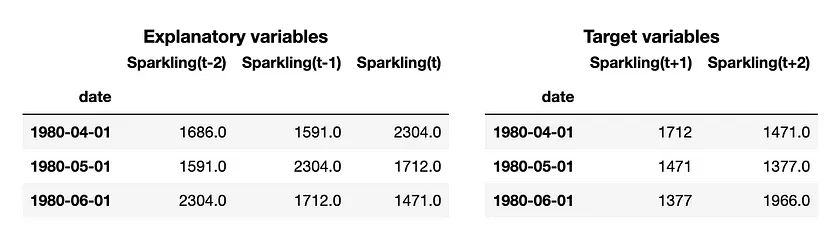
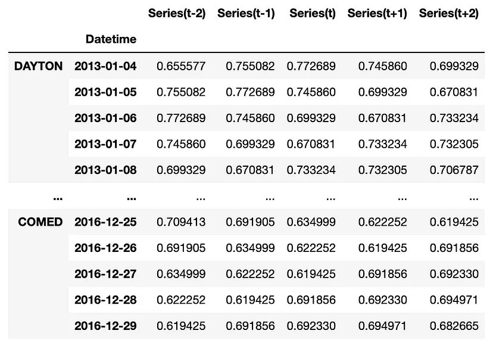
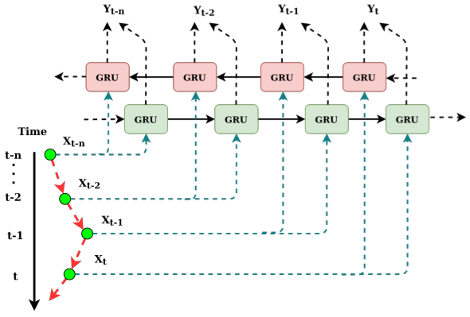
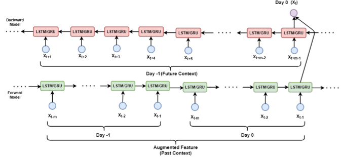
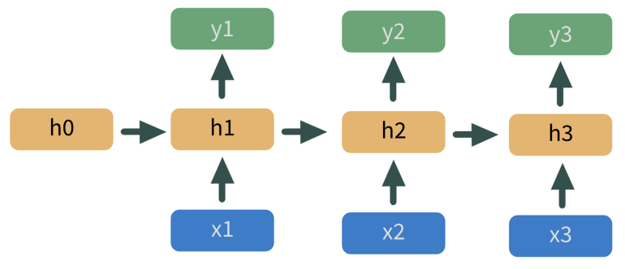
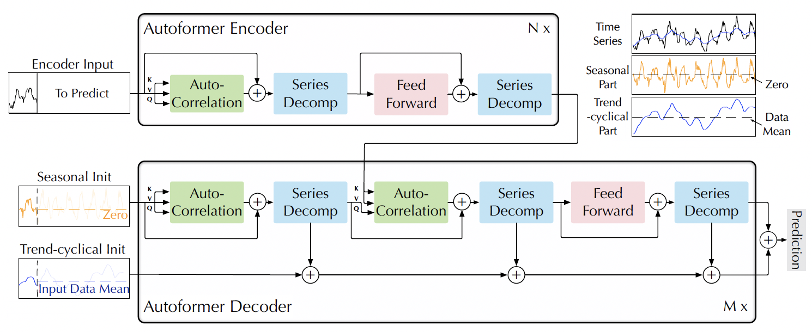
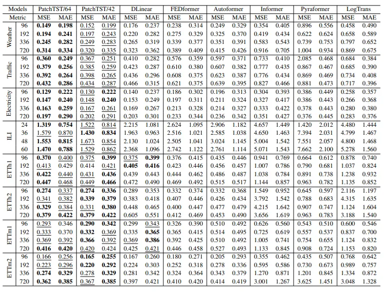

Deep Learning
Misc
- Packages
- A callback is a function that performs some action during the training process
- e.g. saving a model after each training epoch; early stopping when a threshold is reached
- List of Keras callbacks
- Deep networks suffer from the problem of instability for recursive forecasting, and it’s recommended to use direct forecasting
- Lag Selection
- Lag Selection for Univariate Time Series Forecasting using Deep Learning: An Empirical Study (Paper)
- Paper surveys methods of lag selection using NHITS in a global forecasting situation.
- “Avoiding a too small lag size is critical for an adequate forecasting performance, and an excessively large lag size can also reduce performance.”
- “Cross-validation approaches for lag selection lead to the best performance. However, lag selection based on PACF or based on heuristics show a comparable performance with these.”
- Lag Selection for Univariate Time Series Forecasting using Deep Learning: An Empirical Study (Paper)
- Predictive Adjustment
Preprocessing
- Misc
- Scale by the mean
For global forecasting, this brings all series into a common value range. Therefore, the scale of the values won’t be a factor in model training.
Example: global forecasting
from sklearn.model_selection import train_test_split # leaving last 20% of observations for testing train, test = train_test_split(data, test_size=0.2, shuffle=False) # computing the average of each series in the training set mean_by_series = train.mean() # mean-scaling: dividing each series by its mean value train_scaled = train / mean_by_series test_scaled = test / mean_by_series
- Logging
Log series after scaling transformation
Handles heterskedacity
Can create more compact ranges, which then enables more efficient neural network training
Helps avoid saturation areas of the neural network.
- Saturation occurs when the neural network becomes insensitive to different inputs. This hampers the learning process, leading to a poor model.
Example
import numpy as np class LogTransformation: @staticmethod def transform(x): xt = np.sign(x) * np.log(np.abs(x) + 1) return xt @staticmethod def inverse_transform(xt): x = np.sign(xt) * (np.exp(np.abs(xt)) - 1) return x # log transformation train_scaled_log = LogTransformation.transform(train_scaled) test_scaled_log = LogTransformation.transform(test_scaled)
- Create a matrix with lags and leads
Example: Univariate
# src module here: https://github.com/vcerqueira/blog/tree/main/src from src.tde import time_delay_embedding # using 3 lags as explanatory variables N_LAGS = 3 # forecasting the next 2 values HORIZON = 2 # using a sliding window method called time delay embedding X, Y = time_delay_embedding(series, n_lags=N_LAGS, horizon=HORIZON, return_Xy=True)- “Target variables” are lead variables
Example: Global
# src module here: https://github.com/vcerqueira/blog/tree/main/src from src.tde import time_delay_embedding N_FEATURES = 1 # time series is univariate N_LAGS = 3 # number of lags HORIZON = 2 # forecasting horizon # transforming time series for supervised learning train_by_series, test_by_series = {}, {} # iterating over each time series for col in data: train_series = train_scaled_log[col] test_series = test_scaled_log[col] train_series.name = 'Series' test_series.name = 'Series' # creating observations using a sliding window method train_df = time_delay_embedding(train_series, n_lags=N_LAGS, horizon=HORIZON) test_df = time_delay_embedding(test_series, n_lags=N_LAGS, horizon=HORIZON) train_by_series[col] = train_df test_by_series[col] = test_df train_df = pd.concat(train_by_series, axis=0) # combine data row-wise
{kind=link}
{kind=link}
Feed-Forward
- From Hyndman paper on Local vs Global modeling, Principles and Algorithms for Forecasting Groups of Time Series:Locality and Globality
- Deep Network Autoregressive (Keras):
- ReLu MLP with 5 layers, each of 32 units width
- Linear activation in the final layer
- Adam optimizer with default learning rate.
- Early stopping on a cross-validation set at 15% of the dataset
- Batch size is set to 1024 for speed
- Loss function is the mean absolute error (MAE).
- Deep Network Autoregressive (Keras):
LSTM
- Extensions
- CNN-LSTM - utilizes the CNN layers to improve the feature extraction before sequence prediction by the LSTM
- Autoregressive LSTM (AR-LSTM) -takes in n timesteps worth of data for a product and then makes a prediction for the n+1 week. The prediction for the n+1 week is then used to generate the features as input for the n+2 th week’s prediction GRU - bi-directional model - In NLP, it uses the preceding value and a succeeding value to predict the middle value. In forecasting, the preceding value is used as a substitute for the succeeding value 
- Example: You have a sequence 15,20,22,24 and you want to predict the next value
- One GRU which takes the input 15,20,22,24 often called the forward GRU.
- This input sequence of the forward model is often called the forward context
- Then you use another representation of the same sequence in reverse order i.e. 24,22,20 and 15 which is used by another GRU called the backward GRU.
- This input sequence of the forward model is often called the backward context
- The final prediction is a function of the prediction of both the GRUs.
- One GRU which takes the input 15,20,22,24 often called the forward GRU.
- GRU Extension: “bi-directional model of forecasting with truly bi-directional features” (BD-BLSTM) (article)
- Basically adds seasonality to the GRU
- Example: Forecasting the value for May 24th 8:00am
- Forward GRU: 07:00 AM, 07:15 AM, and 07:45 AM values from 24th May AND 07:00 AM, 07:15 AM, 07:45 AM values from 23rd May
- Backward GRU: 08:15 AM, 08:30 AM and 08:45 AM values from 23rd May
- Example: Forecasting the value for May 24th 8:00am
- Basically adds seasonality to the GRU
- Example: You have a sequence 15,20,22,24 and you want to predict the next value
{kind=link}
RNN
Essentially a bunch of neural nets stacked on top of each other
overly simplistic in their assumptions about what should be passed to the next hidden layer
- Long Short Term Memory (LSTM) and Gate Recurring Units (GRU) layers provide filters for what information get’s passed down the chain
Example
- x’s in blue are predictor variables
- h’s in yellow are hidden layers
- y’s in green are predicted values
- output of the model at h1 feeds into the next model at h2, etc.
- Not sure if he output is y1 or some kind of embedding from h1 that feeds into h2
- I think each predictor variable
{kind=link}
Transformers
- Misc
- I think most of the research is in using these as forecast models themselves and not necessarily as a categorical/discrete feature transformation
- Notes from
- Attention heads - enable the Transformer to learn relationships between a time step and every other time step in the input sequence
- Architecture Comparisons
- RNNs implement sequential processing: The input (let’s say sentences) is processed word by word.
- Transformers use non-sequential processing: Sentences are processed as a whole, rather than word by word
- The LSTM requires 8 time-steps to process the sentences, while BERT requires only 2
- BERT is better able to take advantage of parallelism, provided by modern GPU acceleration
- RNNs are forced to compress their learned representation of the input sequence into a single state vector before moving to future tokens.
- LSTMs solved the vanishing gradient issue that vanilla RNNs suffer from, but they are still prone to exploding gradients. Thus, they are struggling with longer dependencies
- Transformers, on the other hand, have much higher bandwidth. For example, in the Encoder-Decoder Transformer model, the Decoder can directly attend to every token in the input sequence, including the already decoded.
- Transformers use a special case called Self-Attention: This mechanism allows each word in the input to reference every other word in the input.
- Transformers can use large Attention windows (e.g. 512, 1048). Hence, they are very effective at capturing contextual information in sequential data over long ranges.
- Issues
- The initial BERT model has a limit of 512 tokens. The naive approach to addressing this issue is to truncate the input sentences.
- Alternatively, we can create Transformer Models that surpass that limit, making it up to 4096 tokens. However, the cost of self-attention is quadratic with respect to the sentence length.
- The initial BERT model has a limit of 512 tokens. The naive approach to addressing this issue is to truncate the input sentences.
- Robustness and Model Size
.png)
- Robustness: As the time series gets longer (aka Input Len), Autoformer holds it’s performance best
- The rest start to crumble after the length gets past 192 time points
- Model Size: Autoformer is again the best and holds its performance pretty much up through 24 layers
- Hyper-parameters:
- embedding dimension
- number of heads
- number of layers
- In general, 3-6 layers yields the best performance
- More layers typically adds more accuracy. In NLP and Computer Vision (CV), their models are usually 12 to 128 layers, so this will be an area of improvement.
- Autoformer Wu et al., 2021 has a moving average trend decomposition component that can be added to other transformer architectures to greatly enhance performance

- Robustness: As the time series gets longer (aka Input Len), Autoformer holds it’s performance best
- PatchTST (paper, article)
- Misc
- Packages
- {{neuralforecast}} - NIXLA collection of neural forecasting models
- Packages
- Patched Attention: Their attention takes in large parts of the time series as tokens instead of a point-wise attention
- Previous Architectures
- Self-Attention treats each timestamp treated as a token
- Issues
- Permutation-Invariance — where the same attention values would be observed if you flipped the points around (?)
- Each timestamp doesn’t have a lot of information in it and gets its importance from the timestamps around it. So treating each timestamp as a token is like tokenizing a character instead of a word.
- Results
- Overfitting: adding noise didn’t significantly decrease transformer performance
- Longer lookback periods didn’t increase accuracy. Meaning significant temporal patterns weren’t recognized
- Issues
- Self-Attention treats each timestamp treated as a token
- PatchTST
- Split each input time series up into fixed-length “patches” (i.e. windows).
- These patches are then passed through dedicated channels as the input tokens to the main model (the length of the patch is the token size).
- The model then adds a positional encoding to each patch and runs it through a vanilla transformer encoder.
- Benefits
- Takes advantage of local semantic information (i.e. window of timestamps)
- Fewer input tokens needed allowing the model to capture info from longer sequences and dramatically reducing the memory required to train and predict
- Makes it viable to do Representational Learning (?)
- Previous Architectures
- Channel Independence: different target series in a time series are processed independently of each other with different attention weights.
- Previous Architectures
- All target time series would be concatenated together into a matrix where each row of the matrix is a single series and the columns are the input tokens (one for each timestamp).
- These input tokens would then be projected into the embedding space, and these embeddings were passed into a single attention layer
- PatchTST
- Each target series is passed independently into the transformer backbone
- Therefore, every series has its own set of attention weights, allowing the model to specialize better.
- Seems like the opposite rationalization of global model forecasting (See Forecasting, Hierarchical/Grouped >> Global
- Previous Architectures
- Benchmarks
- Two variants: 64 “patches” and 42 “patches”
- 42 patch variant has the same lookback window as the other models
- Both variants have a patch length of 16 and a stride of 8 were used to construct the input tokens
- On average, PatchTST/64 achieved a 21% reduction in MSE and a 16.7% reduction in MAE. PatchTST/42 achieved a 20.2% reduction in MSE and a 16.4% reduction in MAE.
- Two variants: 64 “patches” and 42 “patches”
- Misc